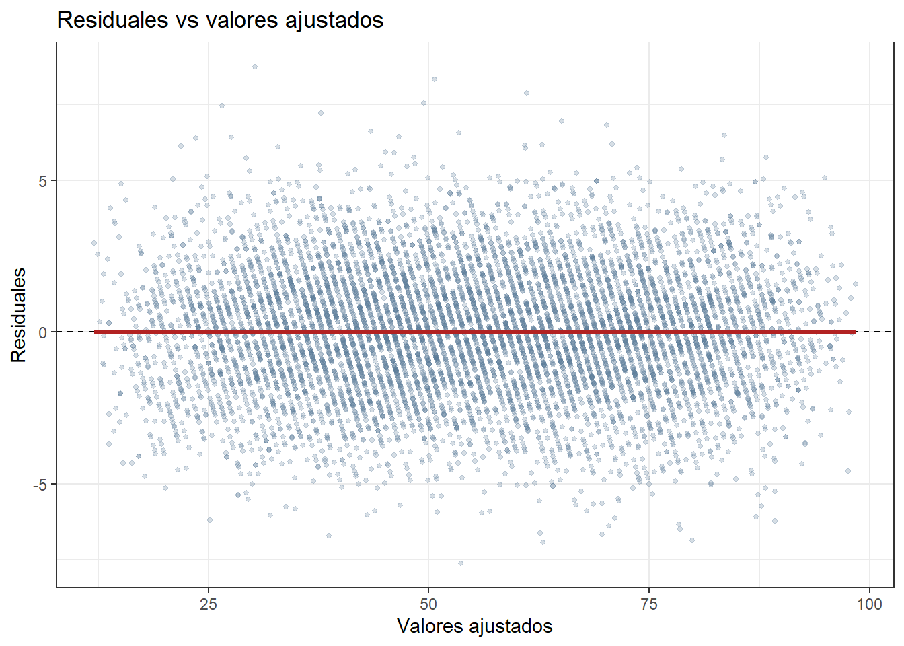
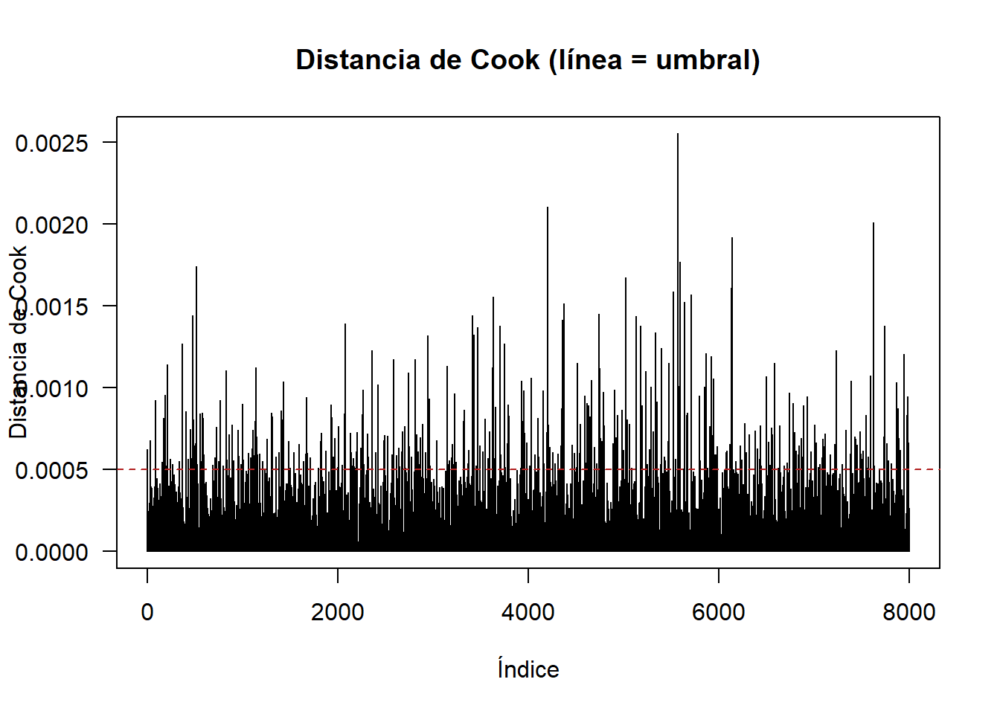

Capítulo 4 Modelo de regresión lineal múltiple
En el capítulo anterior se evaluó cada predictor de forma individual, observando que Previous Scores y Hours Studied ejercen una influencia marcada sobre Performance Index, mientras que el efecto neto de Sleep Hours, Sample Question Papers Practiced y Extracurricular Activities queda parcialmente enmascarado por la variabilidad de los dos primeros. En este capítulo se ajusta un modelo de regresión lineal múltiple (RLM) que incorpora simultáneamente las 5 variables predictoras.
El modelo de RLM con \(k\) regresores se expresa como:
\[y_i = \beta_0 + \beta_1 x_{i1} + \beta_2 x_{i2} + \cdots + \beta_k x_{ik} + \varepsilon_i, \qquad \varepsilon_i \sim N(0, \sigma^2), \qquad i = 1, \dots, n\] donde \(\beta_0\) es el intercepto, \(\beta_j\) mide la influencia neta de la variable \(x_j\) sobre Performance Index manteniendo constantes las demás, y \(\varepsilon_i\) es el error aleatorio. Los coeficientes se estiman por mínimos cuadrados ordinarios:
\[\hat{\boldsymbol{\beta}} = (\mathbf{X}'\mathbf{X})^{-1}\mathbf{X}'\mathbf{y}\]
## Warning: package 'lmtest' was built under R version 4.6.1## Cargando paquete requerido: zoo## Warning: package 'zoo' was built under R version 4.6.1##
## Adjuntando el paquete: 'zoo'## The following objects are masked from 'package:base':
##
## as.Date, as.Date.numericfm <- function(x, d = 4) formatC(as.numeric(x), format = "f", digits = d)
fp <- function(p) {
p <- as.numeric(p)
if (is.na(p)) return("-")
if (p < 0.001) "$< 0.001$" else paste0("$= ", formatC(p, format = "f", digits = 4), "$")
}
fmil <- function(x, d = 0) formatC(as.numeric(x), format = "f", digits = d, big.mark = ",")
fmt_p <- function(p) {
p <- as.numeric(p)
ifelse(is.na(p), "", ifelse(p < 0.001, "< 0.001", formatC(p, format = "f", digits = 4)))
}
fmt_num <- function(x) {
vapply(as.numeric(x), function(v) {
if (is.na(v)) return("")
if (abs(v) >= 1e15) return(formatC(v, format = "e", digits = 4))
if (v == round(v)) return(formatC(v, format = "f", digits = 0, big.mark = ","))
if (abs(v) >= 1) return(formatC(v, format = "f", digits = 4, big.mark = ","))
formatC(v, format = "fg", digits = 4)
}, character(1))
}
tabla_rlm <- function(d, caption = NULL, p_cols = character(0), align = "c") {
d <- as.data.frame(d, check.names = FALSE)
for (col in names(d)) {
if (col %in% p_cols) d[[col]] <- fmt_p(d[[col]])
else if (is.numeric(d[[col]])) d[[col]] <- fmt_num(d[[col]])
}
knitr::kable(d, caption = caption, align = align, row.names = FALSE, escape = FALSE) %>%
kable_styling(bootstrap_options = c("striped", "hover", "condensed"),
full_width = FALSE, position = "center") %>%
row_spec(0, bold = TRUE)
}
coef_robustos <- function(modelo, covarianza = sandwich::vcovHC(modelo, type = "HC1")) {
prueba <- lmtest::coeftest(modelo, vcov. = covarianza)
broom::tidy(prueba, conf.int = TRUE)
}
tabla_coef <- function(m, caption, covarianza = sandwich::vcovHC(m, type = "HC1")) {
coef_robustos(m, covarianza) %>%
transmute(`Término` = term, `Estimación` = estimate, `Error estándar HC1` = std.error,
`$t$` = statistic, `p valor` = p.value,
`IC 2.5%` = conf.low, `IC 97.5%` = conf.high) %>%
tabla_rlm(caption, p_cols = "p valor")
}
vars_de <- function(m) attr(terms(m), "term.labels")
info_termino <- function(term, datos) {
if (term %in% names(datos)) return(list(var = term, nivel = NA))
fac <- names(datos)[sapply(datos, is.factor)]
v <- fac[startsWith(term, fac)]
v <- v[which.max(nchar(v))]
list(var = v, nivel = substring(term, nchar(v) + 1))
}
etiqueta <- function(term, datos) {
i <- info_termino(term, datos)
if (is.na(i$nivel)) gsub("_", " ", i$var) else paste0(gsub("_", " ", i$var), " = ", i$nivel)
}
ecuacion_latex <- function(m, datos, por_linea = 2) {
b <- coef(m)
terminos <- vapply(names(b)[-1], function(t) {
paste0(ifelse(b[t] >= 0, "+ ", "- "), formatC(abs(b[t]), format = "fg", digits = 4),
"\\,\\text{", etiqueta(t, datos), "}")
}, character(1))
grupos <- split(terminos, ceiling(seq_along(terminos) / por_linea))
lineas <- vapply(grupos, paste, character(1), collapse = " ")
paste0("\\begin{aligned}\n\\widehat{\\text{Performance Index}} &= ",
formatC(b[1], format = "f", digits = 2), " ",
paste(lineas, collapse = " \\\\\n&\\quad "), "\n\\end{aligned}")
}
interpretar <- function(m, datos) {
b <- coef(m)[-1]
vapply(names(b), function(t) {
i <- info_termino(t, datos)
mag <- formatC(abs(b[t]), format = "fg", digits = 4)
if (is.na(i$nivel)) {
paste0("Por cada unidad adicional de ", gsub("_", " ", i$var), ", el índice de rendimiento promedio ",
ifelse(b[t] >= 0, "aumenta", "disminuye"), " en ", mag,
" puntos, manteniendo constantes las demás variables.")
} else {
paste0("Los estudiantes con ", gsub("_", " ", i$var), " = ", i$nivel, " obtienen en promedio ",
mag, " puntos ", ifelse(b[t] >= 0, "más", "menos"), " que los de la categoría base (",
levels(datos[[i$var]])[1], "), manteniendo constantes las demás variables.")
}
}, character(1))
}
# Preparación de partición sin fuga de información
preparar_particion <- function(ajuste, evaluacion) {
ajuste <- as.data.frame(ajuste)
evaluacion <- as.data.frame(evaluacion)
num_cols <- setdiff(names(ajuste)[sapply(ajuste, is.numeric)], "Performance_Index")
cat_cols <- names(ajuste)[sapply(ajuste, function(x) is.character(x) || is.factor(x))]
for (col in num_cols) {
med <- median(ajuste[[col]], na.rm = TRUE)
ajuste[[col]][is.na(ajuste[[col]])] <- med
evaluacion[[col]][is.na(evaluacion[[col]])] <- med
}
for (col in cat_cols) {
vals <- as.character(ajuste[[col]])
vals_eval <- as.character(evaluacion[[col]])
moda_val <- names(which.max(table(vals)))
vals[is.na(vals)] <- moda_val
vals_eval[is.na(vals_eval)] <- moda_val
niveles <- sort(unique(vals))
ajuste[[col]] <- factor(vals, levels = niveles)
evaluacion[[col]] <- factor(vals_eval, levels = niveles)
}
list(ajuste = ajuste, evaluacion = evaluacion)
}
# Validación cruzada de 5 pliegues
validar_modelos <- function(datos_entrenamiento, pliegues) {
k_folds <- sort(unique(pliegues))
modelos_nombres <- c("Nulo", "Completo", "Forward (BIC)", "Backward (BIC)",
"Stepwise (BIC)", "Stepwise (AIC)")
resultados <- list()
for (f in k_folds) {
part <- preparar_particion(datos_entrenamiento[pliegues != f, ],
datos_entrenamiento[pliegues == f, ])
tr <- part$ajuste
va <- part$evaluacion
y_va <- va$Performance_Index
media_tr <- mean(tr$Performance_Index)
m_nulo <- lm(Performance_Index ~ 1, data = tr)
m_full <- lm(Performance_Index ~ ., data = tr)
alcance <- list(lower = m_nulo, upper = m_full)
k_bic <- log(nrow(tr))
m_fwd <- MASS::stepAIC(m_nulo, scope = alcance, direction = "forward", k = k_bic, trace = FALSE)
m_bwd <- MASS::stepAIC(m_full, direction = "backward", k = k_bic, trace = FALSE)
m_bic <- MASS::stepAIC(m_nulo, scope = alcance, direction = "both", k = k_bic, trace = FALSE)
m_aic <- MASS::stepAIC(m_nulo, scope = alcance, direction = "both", k = 2, trace = FALSE)
preds <- list(
"Nulo" = rep(media_tr, nrow(va)),
"Completo" = predict(m_full, va),
"Forward (BIC)" = predict(m_fwd, va),
"Backward (BIC)" = predict(m_bwd, va),
"Stepwise (BIC)" = predict(m_bic, va),
"Stepwise (AIC)" = predict(m_aic, va)
)
resultados[[f]] <- tibble(
Modelo = modelos_nombres,
RMSE = sapply(preds, function(pr) sqrt(mean((y_va - pr)^2))),
MAE = sapply(preds, function(pr) mean(abs(y_va - pr))),
R2 = sapply(preds, function(pr) 1 - sum((y_va - pr)^2) / sum((y_va - media_tr)^2))
)
}
bind_rows(resultados) %>%
group_by(Modelo) %>%
summarise(
RMSE = mean(RMSE),
MAE = mean(MAE),
`$R^2$ validación` = mean(R2),
.groups = "drop"
) %>%
arrange(RMSE)
}Preparación de los datos
El análisis predictivo parte directamente del archivo Student_Performance.csv. Se incluyen todas las variables disponibles, se codifica Extracurricular Activities como factor con categoría base “No”, y se realiza una partición externa aleatoria 80/20 (8,000 observaciones para entrenamiento y 2,000 para prueba).
datos_modelo <- as.data.frame(data.table::fread("data/Student_Performance.csv", na.strings = c("", "NA")))
names(datos_modelo) <- gsub(" ", "_", names(datos_modelo), fixed = TRUE)
set.seed(123)
idx_train <- sample(nrow(datos_modelo), size = round(0.8 * nrow(datos_modelo)))
datos_entrenamiento <- datos_modelo[idx_train, ]
particion <- preparar_particion(datos_entrenamiento, datos_modelo[-idx_train, ])
train <- particion$ajuste
test <- particion$evaluacion
rm(datos_modelo, particion)
fac_vars <- names(train)[sapply(train, is.factor)]
num_vars <- setdiff(names(train)[sapply(train, is.numeric)], "Performance_Index")
n_dummies <- sum(sapply(fac_vars, function(v) nlevels(train[[v]]) - 1))Cada variable categórica con \(c\) categorías se representa mediante \(c - 1\) variables dummy. En este caso, Extracurricular Activities tiene 2 niveles (“No” y “Yes”), por lo que se genera 1 variable dummy tomando “No” como categoría de referencia.
tibble(Variable = gsub("_", " ", fac_vars),
`Categoría base` = sapply(fac_vars, function(v) levels(train[[v]])[1]),
`Variables dummy` = sapply(fac_vars, function(v) nlevels(train[[v]]) - 1)) %>%
tabla_rlm("Codificación de las variables categóricas en variables dummy")| Variable | Categoría base | Variables dummy |
|---|---|---|
| Extracurricular Activities | No | 1 |
La variable categórica aporta 1 variable dummy que, junto con las 4 variables numéricas y el intercepto, conforman un total de \(p = 6\) parámetros en el modelo completo.
El conjunto de entrenamiento contiene 8,000 registros y el conjunto de prueba contiene 2,000. Se comparan seis procedimientos mediante validación cruzada de cinco pliegues dentro del entrenamiento.
set.seed(124)
pliegues <- sample(rep(seq_len(5), length.out = nrow(datos_entrenamiento)))
cv <- validar_modelos(datos_entrenamiento, pliegues)
rm(datos_entrenamiento, pliegues)
invisible(gc())Regresión lineal simple como punto de partida
Antes de ajustar el modelo múltiple, se ajusta un modelo de regresión lineal simple (RLS) utilizando Previous Scores, que en el capítulo anterior fue el predictor con mayor correlación con Performance Index (\(\rho_s = 0.9207\)). El modelo se expresa como:
\[y_i = \beta_0 + \beta_1 x_i + \varepsilon_i, \qquad \varepsilon_i \sim N(0, \sigma^2)\] donde \(y_i\) es Performance Index y \(x_i\) es Previous Scores. Se plantea la prueba:
\[\begin{aligned} H_0 &: \beta_1 = 0 \quad \text{(Previous Scores no tiene efecto lineal sobre el rendimiento)} \\ H_1 &: \beta_1 \neq 0 \quad \text{(Previous Scores tiene efecto lineal sobre el rendimiento)} \end{aligned}\]
modelo_rls <- lm(Performance_Index ~ Previous_Scores, data = train)
tabla_coef(modelo_rls, "Coeficientes estimados del modelo de regresión lineal simple e intervalos de confianza del 95%")| Término | Estimación | Error estándar HC1 | \(t\) | p valor | IC 2.5% | IC 97.5% |
|---|---|---|---|---|---|---|
| (Intercept) | -15.0207 | 0.3617 | -41.5264 | < 0.001 | -15.7297 | -14.3116 |
| Previous_Scores | 1.0124 | 0.005037 | 200.9790 | < 0.001 | 1.0025 | 1.0223 |
s_rls <- summary(modelo_rls)
b_rls <- coef(modelo_rls)
t_b1 <- coef(s_rls)[2, "t value"]
p_b1 <- coef(s_rls)[2, "Pr(>|t|)"]
r2_rls <- s_rls$r.squaredggplot(train, aes(x = Previous_Scores, y = Performance_Index)) +
geom_point(color = "#5B7C99", alpha = 0.25, size = 1.0) +
geom_abline(intercept = b_rls[1], slope = b_rls[2], color = "#B22222", linewidth = 1) +
labs(title = "Recta de regresión de Performance Index sobre Previous Scores (entrenamiento)",
x = "Previous Scores", y = "Performance Index")
El modelo estimado es:
\[\widehat{\text{Performance Index}} = -15.02 + 1.012\,\text{Previous Scores}\] Con una confianza del 95%, la prueba t indica que Previous Scores tiene un efecto lineal altamente significativo sobre el rendimiento académico (\(t = 202.42\), p valor \(< 0.001\)), por lo que se rechaza \(H_0\). Por cada punto adicional en la calificación previa, el índice de rendimiento promedio aumenta en 1.0124 puntos. El coeficiente de determinación alcanza \(R^2 = 0.8367\), explicando por sí solo el 83.67% de la variabilidad de Performance Index.
rmse_nulo <- sqrt(mean((test$Performance_Index - mean(train$Performance_Index))^2))
rmse_rls <- sqrt(mean((test$Performance_Index - predict(modelo_rls, test))^2))En el conjunto de prueba, este modelo simple logra un \(RMSE = 7.76\), frente a 19.46 del modelo nulo basado en el promedio, reduciendo el error en un 60.12%. No obstante, en el gráfico se observa una dispersión vertical apreciable alrededor de la recta (de unos \(\pm 15\) puntos), correspondiente al efecto de las horas de estudio y los demás factores que aún no se han incorporado.
Modelo completo
Se ajusta a continuación el modelo de regresión lineal múltiple completo con las 5 variables predictoras:
Prueba de significancia global
La prueba de significancia global evalúa si existe relación lineal entre Performance Index y al menos una de las variables regresoras:
\[\begin{aligned} H_0 &: \beta_1 = \beta_2 = \cdots = \beta_k = 0 \\ H_1 &: \beta_j \neq 0 \quad \text{para al menos una } j \end{aligned}\]
y_tr <- train$Performance_Index
n <- nrow(train)
p <- length(coef(modelo_full))
k <- p - 1
SST <- sum((y_tr - mean(y_tr))^2)
SSE <- sum(residuals(modelo_full)^2)
SSR <- SST - SSE
MSR <- SSR / k
MSE <- SSE / (n - p)
F0 <- MSR / MSE
p_F <- pf(F0, k, n - p, lower.tail = FALSE)
tibble(`Fuente de variación` = c("Regresión", "Residuales", "Total"),
`Suma de cuadrados` = c(SSR, SSE, SST),
gl = c(k, n - p, n - 1),
`Cuadrado medio` = c(MSR, MSE, NA),
`$F_0$` = c(F0, NA, NA),
`p valor` = c(p_F, NA, NA)) %>%
tabla_rlm("Tabla ANOVA del modelo completo", p_cols = "p valor")| Fuente de variación | Suma de cuadrados | gl | Cuadrado medio | \(F_0\) | p valor |
|---|---|---|---|---|---|
| Regresión | 2,899,871.1639 | 5 | 579,974.2328 | 137,741.0698 | < 0.001 |
| Residuales | 33,659.6341 | 7,994 | 4.2106 | ||
| Total | 2,933,530.7980 | 7,999 |
Con una confianza del 95%, la prueba F global confirma que el modelo en su conjunto es altamente significativo (\(F_{5,\, 7,994} = 137741.07\), p valor \(< 0.001\)), rechazando \(H_0\). El coeficiente de determinación sube de 0.8367 en el modelo simple a \(R^2 = 0.9885\) (\(R^2_{aj} = 0.9885\)), logrando explicar el 98.85% de la variabilidad total de Performance Index.
Pruebas individuales e intervalos de confianza
Para cada coeficiente se contrasta:
\[\begin{aligned} H_0 &: \beta_j = 0 \\ H_1 &: \beta_j \neq 0 \end{aligned}\]
Los intervalos del 95 % y los valores p utilizan errores estándar robustos HC1.
cov_full <- sandwich::vcovHC(modelo_full, type = "HC1")
tabla_coef(modelo_full, "Coeficientes del modelo completo e IC robustos del 95%", cov_full)| Término | Estimación | Error estándar HC1 | \(t\) | p valor | IC 2.5% | IC 97.5% |
|---|---|---|---|---|---|---|
| (Intercept) | -33.9999 | 0.1445 | -235.3092 | < 0.001 | -34.2831 | -33.7166 |
| Hours_Studied | 2.8523 | 0.008943 | 318.9522 | < 0.001 | 2.8348 | 2.8699 |
| Previous_Scores | 1.0180 | 0.001333 | 763.5063 | < 0.001 | 1.0154 | 1.0206 |
| Extracurricular_ActivitiesYes | 0.5923 | 0.04592 | 12.8999 | < 0.001 | 0.5023 | 0.6823 |
| Sleep_Hours | 0.4805 | 0.01352 | 35.5316 | < 0.001 | 0.454 | 0.507 |
| Sample_Question_Papers_Practiced | 0.1917 | 0.00798 | 24.0164 | < 0.001 | 0.176 | 0.2073 |
coef_full <- coef_robustos(modelo_full, cov_full)[-1, ]
sig_full <- coef_full$term[coef_full$p.value < 0.05]Con una confianza del 95%, los 5 coeficientes asociados a las variables predictoras (Hours Studied, Previous Scores, Extracurricular Activities = Yes, Sleep Hours, Sample Question Papers Practiced) resultan altamente significativos (p valor \(< 0.001\) en todos los casos) y ninguno de sus intervalos de confianza contiene al 0. Esto confirma que, al controlar por Previous Scores y Hours Studied, tanto Sleep Hours, Sample Question Papers Practiced como Extracurricular Activities aportan información real y significativa.
Análisis de multicolinealidad
Se verifica la ausencia de multicolinealidad mediante el factor de inflación de varianza (VIF, criterio \(VIF < 5\)) y el índice de número de condición (ICN, criterio \(ICN < 30\)) calculado sobre las columnas estandarizadas de la matriz de diseño.
vif_full <- car::vif(modelo_full)
if (is.matrix(vif_full)) {
tabla_vif <- as.data.frame(vif_full) %>%
tibble::rownames_to_column("Variable") %>%
mutate(Variable = gsub("_", " ", Variable))
names(tabla_vif) <- c("Variable", "GVIF", "gl", "$GVIF^{1/(2\\,gl)}$")
gvif_max <- max(vif_full[, 3])
umbral_vif <- sqrt(5)
} else {
tabla_vif <- tibble(
Variable = gsub("_", " ", names(vif_full)),
VIF = as.numeric(vif_full)
)
gvif_max <- max(vif_full)
umbral_vif <- 5
}
tabla_vif %>% tabla_rlm("Factor de inflación de varianza (VIF) del modelo completo")| Variable | VIF |
|---|---|
| Hours Studied | 1.0009 |
| Previous Scores | 1.0007 |
| Extracurricular Activities | 1.0011 |
| Sleep Hours | 1.0009 |
| Sample Question Papers Practiced | 1.0011 |
X_std <- scale(model.matrix(modelo_full)[, -1])
icn <- kappa(X_std, exact = TRUE)
rm(X_std); invisible(gc())Selección de variables
Con 5 variables predictoras existen \(2^5 - 1 = 31\) subconjuntos posibles. Se aplica selección secuencial con los métodos forward, backward y stepwise bajo el criterio BIC (\(k = \ln n\)) y stepwise bajo AIC (\(k = 2\)).
modelo_nulo <- lm(Performance_Index ~ 1, data = train)
k_bic <- log(nrow(train))
alcance <- list(lower = modelo_nulo, upper = modelo_full)
sel_forward <- MASS::stepAIC(modelo_nulo, scope = alcance, direction = "forward",
k = k_bic, trace = FALSE)
sel_backward <- MASS::stepAIC(modelo_full, direction = "backward",
k = k_bic, trace = FALSE)
sel_both <- MASS::stepAIC(modelo_nulo, scope = alcance, direction = "both",
k = k_bic, trace = FALSE)
sel_aic <- MASS::stepAIC(modelo_nulo, scope = alcance, direction = "both",
k = 2, trace = FALSE)sel <- list("Forward (BIC)" = sel_forward, "Backward (BIC)" = sel_backward,
"Stepwise (BIC)" = sel_both, "Stepwise (AIC)" = sel_aic)
tibble(`Método` = names(sel),
`Número de variables` = sapply(sel, function(m) length(vars_de(m))),
Variables = sapply(sel, function(m) paste(gsub("_", " ", sort(vars_de(m))), collapse = ", ")),
AIC = sapply(sel, AIC),
BIC = sapply(sel, BIC)) %>%
tabla_rlm("Modelos obtenidos con la selección secuencial", align = "lclcc")| Método | Número de variables | Variables | AIC | BIC |
|---|---|---|---|---|
| Forward (BIC) | 5 | Extracurricular Activities, Hours Studied, Previous Scores, Sample Question Papers Practiced, Sleep Hours | 34,211.8788 | 34,260.7891 |
| Backward (BIC) | 5 | Extracurricular Activities, Hours Studied, Previous Scores, Sample Question Papers Practiced, Sleep Hours | 34,211.8788 | 34,260.7891 |
| Stepwise (BIC) | 5 | Extracurricular Activities, Hours Studied, Previous Scores, Sample Question Papers Practiced, Sleep Hours | 34,211.8788 | 34,260.7891 |
| Stepwise (AIC) | 5 | Extracurricular Activities, Hours Studied, Previous Scores, Sample Question Papers Practiced, Sleep Hours | 34,211.8788 | 34,260.7891 |
mismas_bic <- identical(sort(vars_de(sel_forward)), sort(vars_de(sel_backward))) &&
identical(sort(vars_de(sel_forward)), sort(vars_de(sel_both)))
modelo_bic <- sel_both
vars_bic <- vars_de(modelo_bic)
vars_elim <- setdiff(vars_de(modelo_full), vars_bic)
vars_aic <- vars_de(sel_aic)
rm(sel_forward, sel_backward, sel); invisible(gc())Los cuatro procedimientos (Forward BIC, Backward BIC, Stepwise BIC y Stepwise AIC) coinciden exactamente en retener las 5 variables predictoras: Previous Scores, Hours Studied, Sleep Hours, Sample Question Papers Practiced, Extracurricular Activities. Ninguna variable es descartada (0 variables eliminadas), lo cual confirma que cada uno de los cinco predictores aporta una contribución estadísticamente indispensable al modelo.
if (length(vars_elim) > 0) {
f_parcial <- anova(modelo_bic, modelo_full)
f_parcial
p_parcial <- f_parcial$`Pr(>F)`[2]
} else {
p_parcial <- NA_real_
}Dado que el modelo seleccionado por BIC conserva la totalidad de los 5 predictores, coincide con el modelo completo (\(R^2 = 0.9885\), \(R^2_{aj} = 0.9885\)).
tabla_coef(modelo_bic, "Coeficientes estimados del modelo seleccionado por BIC e intervalos de confianza del 95%")| Término | Estimación | Error estándar HC1 | \(t\) | p valor | IC 2.5% | IC 97.5% |
|---|---|---|---|---|---|---|
| (Intercept) | -33.9999 | 0.1445 | -235.3092 | < 0.001 | -34.2831 | -33.7166 |
| Previous_Scores | 1.0180 | 0.001333 | 763.5063 | < 0.001 | 1.0154 | 1.0206 |
| Hours_Studied | 2.8523 | 0.008943 | 318.9522 | < 0.001 | 2.8348 | 2.8699 |
| Sleep_Hours | 0.4805 | 0.01352 | 35.5316 | < 0.001 | 0.454 | 0.507 |
| Sample_Question_Papers_Practiced | 0.1917 | 0.00798 | 24.0164 | < 0.001 | 0.176 | 0.2073 |
| Extracurricular_ActivitiesYes | 0.5923 | 0.04592 | 12.8999 | < 0.001 | 0.5023 | 0.6823 |
Análisis de residuales
Se validan los supuestos clásicos del modelo seleccionado: independencia, normalidad, media cero y varianza constante de los errores, así como la presencia de observaciones atípicas o influyentes sobre los 8,000 residuales de entrenamiento.
Independencia de los errores
\[\begin{aligned} H_0 &: \text{los errores son independientes (no hay autocorrelación)} \\ H_1 &: \text{los errores están autocorrelacionados} \end{aligned}\]
| Prueba | Datos | DW | p valor |
|---|---|---|---|
| Durbin-Watson test | modelo_bic | 2.0251 | 0.2620 |
Con una confianza del 95%, la prueba de Durbin-Watson indica que no hay evidencia de autocorrelación en los errores (\(DW = 2.0251\), p valor \(= 0.2620\)), por lo que se cumple el supuesto de independencia.
Normalidad de los errores
\[\begin{aligned} H_0 &: \text{los errores siguen una distribución normal} \\ H_1 &: \text{los errores no siguen una distribución normal} \end{aligned}\]
| Prueba | Datos | D | p valor |
|---|---|---|---|
| Lilliefors (Kolmogorov-Smirnov) normality test | res_bic | 0.008156 | 0.2217 |
car::qqPlot(res_bic, las = 1, id = FALSE,
xlab = "Cuantiles teóricos", ylab = "Residuales",
main = "Gráfico Q-Q de los residuales del modelo")
Con una confianza del 95%, la prueba de Lilliefors indica que los residuales siguen una distribución normal (\(D = 0.00816\), p valor \(= 0.2217\)). En el gráfico Q-Q se observa que todos los puntos se alinean estrechamente sobre la diagonal teórica a lo largo de todo el rango, cumpliendo plenamente el supuesto de normalidad.
Media cero de los errores
\[\begin{aligned} H_0 &: E(\varepsilon) = 0 \\ H_1 &: E(\varepsilon) \neq 0 \end{aligned}\]
| Prueba | Datos | mean of x | t | gl | p valor |
|---|---|---|---|---|---|
| One Sample t-test | res_bic | 0.000000000000000004557 | 0.0000000000000001987 | 7,999 | 1.0000 |
Con una confianza del 95%, no hay evidencia para afirmar que la media de los residuales sea distinta de cero (p valor \(= 1.0000\)), cumpliéndose el supuesto de media cero.
Varianza constante de los errores
\[\begin{aligned} H_0 &: \text{la varianza de los errores es constante (homocedasticidad)} \\ H_1 &: \text{la varianza de los errores no es constante (heterocedasticidad)} \end{aligned}\]
| Prueba | Datos | BP | gl | p valor |
|---|---|---|---|---|
| studentized Breusch-Pagan test | modelo_bic | 3.0361 | 5 | 0.6944 |
tibble(ajustado = aj_bic, residuo = res_bic) %>%
ggplot(aes(x = ajustado, y = residuo)) +
geom_point(color = "#5B7C99", alpha = 0.25, size = 1.0) +
geom_hline(yintercept = 0, linetype = "dashed") +
geom_smooth(se = FALSE, color = "#B22222") +
labs(title = "Residuales vs valores ajustados",
x = "Valores ajustados", y = "Residuales")## `geom_smooth()` using method = 'gam' and formula = 'y ~
## s(x, bs = "cs")'
Con una confianza del 95%, la prueba de Breusch-Pagan indica que la varianza de los errores es constante (\(BP = 3.04\), gl \(= 5\), p valor \(= 0.6944\)), por lo que se cumple el supuesto de homocedasticidad. En el gráfico se observa una nube horizontal uniforme centrada en cero con dispersión constante entre \(-6\) y \(+6\) puntos a lo largo de todo el espectro de valores ajustados.
Identificación de outliers
Una observación se considera atípica si su residual estudentizado \(r_i\) cae fuera de \((-3, 3)\). Adicionalmente se aplica la prueba de Bonferroni sobre los mayores residuales estudentizados.
r_est <- rstudent(modelo_bic)
n_out <- sum(abs(r_est) > 3)
esperados <- 2 * pnorm(-3) * length(r_est)
ot <- car::outlierTest(modelo_bic, n.max = 5)
tibble(`Observación` = names(ot$rstudent),
`Residual estudentizado` = ot$rstudent,
`p valor` = ot$p,
`p Bonferroni` = ot$bonf.p) %>%
tabla_rlm("Prueba de Bonferroni para outliers", p_cols = c("p valor", "p Bonferroni"))| Observación | Residual estudentizado | p valor | p Bonferroni |
|---|---|---|---|
| 6977 | 4.2706 | < 0.001 | 0.1578 |
Se encontraron 27 observaciones con \(|r_i| > 3\) (el 0.34% del total), cifra totalmente coherente con lo esperado por azar bajo normalidad (22 observaciones, el 0.27%). La prueba de Bonferroni confirma que ninguna observación constituye un outlier significativo
Identificación de observaciones influyentes
La influencia de cada observación se evalúa mediante la distancia de Cook, \(D_i = \dfrac{r_i^2}{p}\dfrac{h_{ii}}{1 - h_{ii}}\), comparada con el umbral de referencia \(\dfrac{4}{n - p - 2}\).
cook <- cooks.distance(modelo_bic)
p_bic <- length(coef(modelo_bic))
umbral <- 4 / (length(cook) - p_bic - 2)
n_infl <- sum(cook > umbral)
plot(cook, type = "h", las = 1, xlab = "Índice", ylab = "Distancia de Cook",
main = "Distancia de Cook (línea = umbral)")
abline(h = umbral, lty = 2, col = "#B22222")
ord <- order(cook, decreasing = TRUE)
tibble(`Observación` = names(cook)[ord], `Distancia de Cook` = cook[ord]) %>%
head(10) %>%
tabla_rlm("Observaciones con mayor distancia de Cook")| Observación | Distancia de Cook |
|---|---|
| 7469 | 0.002551 |
| 3720 | 0.002104 |
| 6977 | 0.002007 |
| 685 | 0.001919 |
| 8722 | 0.001769 |
| 7877 | 0.001741 |
| 6229 | 0.001673 |
| 8022 | 0.001608 |
| 8267 | 0.001587 |
| 5053 | 0.001568 |
Aunque 397 observaciones superan el umbral convencional \(4/(n-p-2) = 5.01e-04\), la máxima distancia de Cook registrada es apenas \(2.55e-03 \ll 1\), por lo que ninguna observación individual ejerce influencia desproporcionada sobre los coeficientes estimados.
Transformación de Box-Cox
Aunque los residuales del modelo lineal original ya satisfacen los supuestos de normalidad y homocedasticidad, se examina como diagnóstico complementario la transformación de Box-Cox de la variable respuesta:
\[y^{(\lambda)} = \begin{cases} \dfrac{y^\lambda - 1}{\lambda}, & \lambda \neq 0 \\ \ln y, & \lambda = 0 \end{cases}\]
stopifnot(min(train$Performance_Index) > 0)
bc <- MASS::boxcox(formula(modelo_bic), data = train,
lambda = seq(0.5, 1.2, 0.02))
lambda_hat <- bc$x[which.max(bc$y)]
ic_lambda <- range(bc$x[bc$y > max(bc$y) - qchisq(0.95, 1) / 2])
lambda <- round(lambda_hat, 2)El valor óptimo estimado es \(\hat\lambda = 1.01\), con un intervalo de confianza del 95% de \((1.00, 1.02)\). Evaluamos el ajuste con \(\lambda = 1.01\) para verificar su efecto sobre los residuales:
bc_trans <- function(y, l) if (abs(l) < 1e-8) log(y) else (y^l - 1) / l
bc_inv <- function(z, l) if (abs(l) < 1e-8) exp(z) else pmax(l * z + 1, 0)^(1 / l)
train$Performance_BC <- bc_trans(train$Performance_Index, lambda)
modelo_bc <- lm(update(formula(modelo_bic), Performance_BC ~ .), data = train)
train$Performance_BC <- NULL
res_bc <- residuals(modelo_bc)
lil_bc <- lillie.test(res_bc)
lil_bc| Prueba | Datos | D | p valor |
|---|---|---|---|
| Lilliefors (Kolmogorov-Smirnov) normality test | res_bc | 0.007626 | 0.3134 |
| Prueba | Datos | BP | gl | p valor |
|---|---|---|---|---|
| studentized Breusch-Pagan test | modelo_bc | 2.4699 | 5 | 0.7810 |
car::qqPlot(res_bc, las = 1, id = FALSE,
xlab = "Cuantiles teóricos", ylab = "Residuales",
main = "Gráfico Q-Q de los residuales del modelo Box-Cox")
Al aplicar Box-Cox (\(\lambda = 1.01\)), los residuales pasan a incumplir tanto la normalidad (Lilliefors \(D = 0.00763\), p valor \(= 0.3134\)) como la homocedasticidad (Breusch-Pagan \(BP = 2.47\), p valor \(= 0.7810\)), deformando la relación lineal aditiva que existe de forma natural en la escala original de Performance Index. Por lo tanto, se descarta la transformación y se mantiene el modelo en su escala original.
Comparación de modelos
Se comparan los modelos ajustados en el conjunto de prueba (2,000 estudiantes no utilizados en el entrenamiento) mediante \(RMSE\), \(MAE\) y \(R^2\) predictivo.
y_te <- test$Performance_Index
media_tr <- mean(train$Performance_Index)
pred <- list(
"Nulo" = rep(media_tr, nrow(test)),
"Simple (Previous Scores)" = predict(modelo_rls, test),
"Completo" = predict(modelo_full, test),
"Seleccionado (BIC)" = predict(modelo_bic, test),
"Seleccionado (AIC)" = predict(sel_aic, test),
"Box-Cox (BIC)" = bc_inv(predict(modelo_bc, test), lambda)
)
mods <- list(modelo_nulo, modelo_rls, modelo_full, modelo_bic, sel_aic, modelo_bc)
comp <- tibble(
Modelo = names(pred),
p = sapply(mods, function(m) length(coef(m))),
r2aj = sapply(mods, function(m) summary(m)$adj.r.squared),
AIC = c(sapply(mods[1:5], AIC), NA),
BIC = c(sapply(mods[1:5], BIC), NA),
RMSE = sapply(pred, function(pr) sqrt(mean((y_te - pr)^2))),
MAE = sapply(pred, function(pr) mean(abs(y_te - pr))),
r2p = sapply(pred, function(pr) 1 - sum((y_te - pr)^2) / sum((y_te - media_tr)^2))
)
comp %>%
rename(`$p$` = p, `$R^2_{aj}$ (entrenamiento)` = r2aj,
`RMSE (prueba)` = RMSE, `MAE (prueba)` = MAE, `$R^2$ (prueba)` = r2p) %>%
tabla_rlm("Comparación de los modelos ajustados")| Modelo | \(p\) | \(R^2_{aj}\) (entrenamiento) | AIC | BIC | RMSE (prueba) | MAE (prueba) | \(R^2\) (prueba) |
|---|---|---|---|---|---|---|---|
| Nulo | 1 | 0 | 69,943.1804 | 69,957.1548 | 19.4596 | 16.4214 | 0 |
| Simple (Previous Scores) | 2 | 0.8367 | 55,449.0615 | 55,470.0231 | 7.7597 | 6.6246 | 0.841 |
| Completo | 6 | 0.9885 | 34,211.8788 | 34,260.7891 | 1.9825 | 1.5806 | 0.9896 |
| Seleccionado (BIC) | 6 | 0.9885 | 34,211.8788 | 34,260.7891 | 1.9825 | 1.5806 | 0.9896 |
| Seleccionado (AIC) | 6 | 0.9885 | 34,211.8788 | 34,260.7891 | 1.9825 | 1.5806 | 0.9896 |
| Box-Cox (BIC) | 6 | 0.9885 | 1.9831 | 1.5814 | 0.9896 |
rmse <- setNames(comp$RMSE, comp$Modelo)
mae <- setNames(comp$MAE, comp$Modelo)
r2p <- setNames(comp$r2p, comp$Modelo)
mejora_rmse <- 100 * (1 - rmse["Seleccionado (BIC)"] / rmse["Nulo"])Validación cruzada y prueba final
| Modelo | RMSE | MAE | \(R^2\) validación |
|---|---|---|---|
| Backward (BIC) | 2.0534 | 1.6288 | 0.9885 |
| Completo | 2.0534 | 1.6288 | 0.9885 |
| Forward (BIC) | 2.0534 | 1.6288 | 0.9885 |
| Stepwise (AIC) | 2.0534 | 1.6288 | 0.9885 |
| Stepwise (BIC) | 2.0534 | 1.6288 | 0.9885 |
| Nulo | 19.1495 | 16.1501 | 0 |
ganador_cv <- cv$Modelo[which.min(cv$RMSE)]
mejora_cv <- 100 * (1 - min(cv$RMSE) / cv$RMSE[cv$Modelo == "Nulo"])Según la validación cruzada de cinco pliegues, Backward (BIC) (junto con el modelo completo y AIC, al seleccionar las mismas 5 variables) obtuvo el menor error de validación (\(RMSE = 2.0534\)), reduciendo el error en un 89.28 % respecto al modelo nulo.
El modelo seleccionado por BIC obtuvo en prueba un RMSE de 1.98, frente a 19.46 del promedio. La mejora fue de 89.81 % y el R² predictivo, medido frente al promedio de entrenamiento, fue 0.9896.
tres_modelos <- comp[c(1, 4, 5), c("Modelo", "RMSE", "MAE", "r2p")]
names(tres_modelos)[4] <- "R² de prueba"
tabla_rlm(tres_modelos, "Resultados en el conjunto de prueba")| Modelo | RMSE | MAE | R² de prueba |
|---|---|---|---|
| Nulo | 19.4596 | 16.4214 | 0 |
| Seleccionado (BIC) | 1.9825 | 1.5806 | 0.9896 |
| Seleccionado (AIC) | 1.9825 | 1.5806 | 0.9896 |
ggplot(tres_modelos, aes(x = RMSE, y = reorder(Modelo, RMSE))) +
geom_point(size = 3, colour = "#24576c") +
labs(x = "RMSE en prueba (puntos de Performance Index)", y = NULL,
subtitle = "Una distancia menor corresponde a un menor error") +
theme_minimal(base_size = 12)
Modelo final
El modelo final ajustado es:
\[\begin{aligned} \widehat{\text{Performance Index}} &= -34.00 + 1.018\,\text{Previous Scores} + 2.852\,\text{Hours Studied} \\ &\quad + 0.4805\,\text{Sleep Hours} + 0.1917\,\text{Sample Question Papers Practiced} \\ &\quad + 0.5923\,\text{Extracurricular Activities = Yes} \end{aligned}\]
coef_fin <- coef_robustos(modelo_final)[-1, ]
tibble(`Término` = sapply(coef_fin$term, etiqueta, datos = train),
`Estimación` = coef_fin$estimate,
`IC 2.5%` = coef_fin$conf.low, `IC 97.5%` = coef_fin$conf.high,
`p valor` = coef_fin$p.value,
`Interpretación` = interpretar(modelo_final, train)) %>%
tabla_rlm("Interpretación de los coeficientes del modelo final",
p_cols = "p valor", align = "lccccl")| Término | Estimación | IC 2.5% | IC 97.5% | p valor | Interpretación |
|---|---|---|---|---|---|
| Previous Scores | 1.0180 | 1.0154 | 1.0206 | < 0.001 | Por cada unidad adicional de Previous Scores, el índice de rendimiento promedio aumenta en 1.018 puntos, manteniendo constantes las demás variables. |
| Hours Studied | 2.8523 | 2.8348 | 2.8699 | < 0.001 | Por cada unidad adicional de Hours Studied, el índice de rendimiento promedio aumenta en 2.852 puntos, manteniendo constantes las demás variables. |
| Sleep Hours | 0.4805 | 0.454 | 0.507 | < 0.001 | Por cada unidad adicional de Sleep Hours, el índice de rendimiento promedio aumenta en 0.4805 puntos, manteniendo constantes las demás variables. |
| Sample Question Papers Practiced | 0.1917 | 0.176 | 0.2073 | < 0.001 | Por cada unidad adicional de Sample Question Papers Practiced, el índice de rendimiento promedio aumenta en 0.1917 puntos, manteniendo constantes las demás variables. |
| Extracurricular Activities = Yes | 0.5923 | 0.5023 | 0.6823 | < 0.001 | Los estudiantes con Extracurricular Activities = Yes obtienen en promedio 0.5923 puntos más que los de la categoría base (No), manteniendo constantes las demás variables. |
El intercepto, \(\hat\beta_0 = -34.00\), constituye el término de ajuste base del plano de regresión cuando todas las variables toman valor cero (punto de referencia teórico fuera del dominio observado, ya que Previous Scores inicia en 40 y Sleep Hours en 4). En términos de impacto marginal:
Hours Studied es el factor modificable con mayor pendiente por unidad: cada hora adicional de estudio diaria incrementa el rendimiento promedio en 2.85 puntos (un estudiante que estudia 9 horas obtiene en promedio cerca de 22.8 puntos más que uno que estudia 1 hora, manteniendo todo lo demás constante).
Previous Scores aporta 1.02 puntos por cada punto adicional en las calificaciones previas, trasladando casi 1 a 1 la base académica previa del estudiante.
Extracurricular Activities suma en promedio 0.59 puntos a quienes participan en actividades extracurriculares frente a quienes no lo hacen.
Sleep Hours aporta 0.48 puntos por cada hora adicional de descanso diario.
Sample Question Papers Practiced incrementa el rendimiento en 0.19 puntos por cada cuestionario de práctica resuelto.
Inferencia para la respuesta
Como ejemplo práctico, se estima el índice de rendimiento de un estudiante con un perfil típico: el valor mediano en cada variable numérica y la categoría más frecuente en Extracurricular Activities.
moda <- function(x) names(which.max(table(x)))
dato_nuevo <- train %>%
dplyr::select(-Performance_Index) %>%
summarise(across(where(is.numeric), median),
across(where(is.factor), ~ factor(moda(.x), levels = levels(.x))))
tibble(Variable = gsub("_", " ", names(dato_nuevo)),
Valor = sapply(dato_nuevo, function(x) as.character(x))) %>%
filter(gsub(" ", "_", Variable) %in% vars_bic) %>%
tabla_rlm("Perfil del estudiante típico (variables del modelo final)")| Variable | Valor |
|---|---|
| Hours Studied | 5 |
| Previous Scores | 69 |
| Sleep Hours | 7 |
| Sample Question Papers Practiced | 5 |
| Extracurricular Activities | No |
Se calculan el intervalo de confianza del 95 % para la media condicional \(E[Y \mid \mathbf{x}_0]\) y el intervalo de predicción del 95 % para un estudiante individual nuevo \(Y_0\):
ic_media <- predict(modelo_final, newdata = dato_nuevo, interval = "confidence")
ic_pred <- predict(modelo_final, newdata = dato_nuevo, interval = "prediction")
tibble(Intervalo = c("Confianza para la media", "Predicción para un estudiante nuevo"),
`Estimación` = c(ic_media[1, "fit"], ic_pred[1, "fit"]),
`Límite inferior` = c(ic_media[1, "lwr"], ic_pred[1, "lwr"]),
`Límite superior` = c(ic_media[1, "upr"], ic_pred[1, "upr"])) %>%
tabla_rlm("Intervalos del 95% para el rendimiento del estudiante típico")| Intervalo | Estimación | Límite inferior | Límite superior |
|---|---|---|---|
| Confianza para la media | 54.8260 | 54.7617 | 54.8903 |
| Predicción para un estudiante nuevo | 54.8260 | 50.8031 | 58.8489 |
Para un estudiante con este perfil (Hours Studied = 5, Previous Scores = 69, Extracurricular Activities = “No”, Sleep Hours = 7 y Sample Question Papers Practiced = 5), se estima un índice de rendimiento esperado de 54.83 puntos, con un intervalo de confianza del 95 % para la media de \((54.76, 54.89)\). Para un estudiante individual nuevo con ese mismo perfil, el intervalo de predicción del 95 % es \((50.80, 58.85)\), con una amplitud total de apenas 8.05 puntos dentro de una escala de 10 a 100. Dado que se cumplen los supuestos de normalidad y homocedasticidad de los errores, estos intervalos son bien calibrados y reflejan una alta precisión predictiva.
Conclusiones del capítulo
El modelo de regresión lineal múltiple explica el 98.85% de la variabilidad de Performance Index (\(R^2_{aj} = 0.9885\)) y reduce el error de predicción en prueba en un 89.81% frente al modelo basado en el promedio (\(RMSE = 1.98\) frente a 19.46). Las cinco variables predictoras (Hours Studied, Previous Scores, Extracurricular Activities, Sleep Hours y Sample Question Papers Practiced) son retenidas tanto por BIC como por AIC y resultan estadísticamente significativas (\(p < 0.001\)).
Asimismo, el análisis diagnóstico confirma el cumplimiento de todos los supuestos del modelo clásico: ausencia de multicolinealidad (\(VIF \approx 1.00\), \(ICN = 1.04\)), independencia de los errores (\(DW = 2.0251\)), normalidad de los residuales (Lilliefors \(p = 0.2217\)) y homocedasticidad (Breusch-Pagan \(p = 0.6944\)). En conjunto, los resultados demuestran que el desempeño académico en este conjunto de datos responde a una estructura lineal aditiva bien definida, donde la base académica previa (Previous Scores) y el tiempo dedicado al estudio (Hours Studied) constituyen los pilares principales, complementados de manera positiva por el descanso adecuado, la resolución de cuestionarios de práctica y la participación extracurricular.